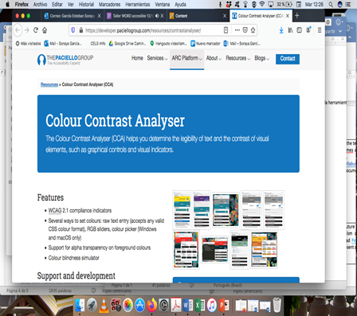
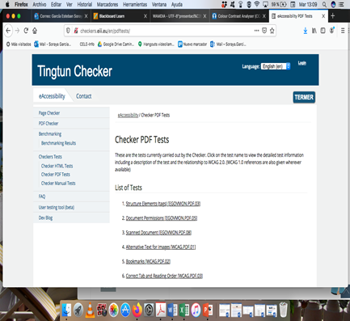
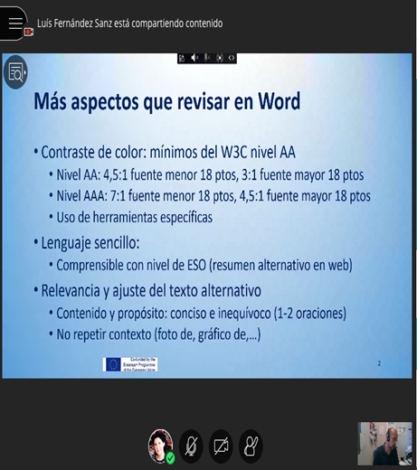
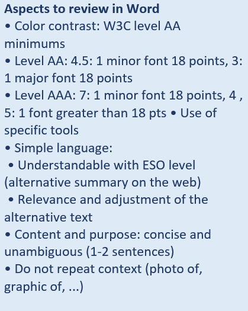

Resources for the elaboration of accessible online-courses
With the aim of contributing to the design of contents for students with functional diversity and the use of diverse resources, in collaboration with WAMDIA, as proposed below, ErasmusX participated in the seminar:
Description: There is a reality that we should bear in mind when designing digital content as there may be people with functional diversity who find it impossible to access all the information if we do make it accessible. The Diversity Attention Unit of Universidad de Alcalá de Henares, with the collaboration and experience of the UAH Computer Science and Artificial Intelligence PDI, proposes in their workshop a basic approach to the universal design of materials. The aim is to focus on how to design accessible documents in Word, which can also serve as a basis for PDF files and other audio visual content. Resources are available at WAMDIA project (wamdia.eu).
Some useful resources to take into account for the elaboration of accessible online-courses:
- 
- 
- 
- 